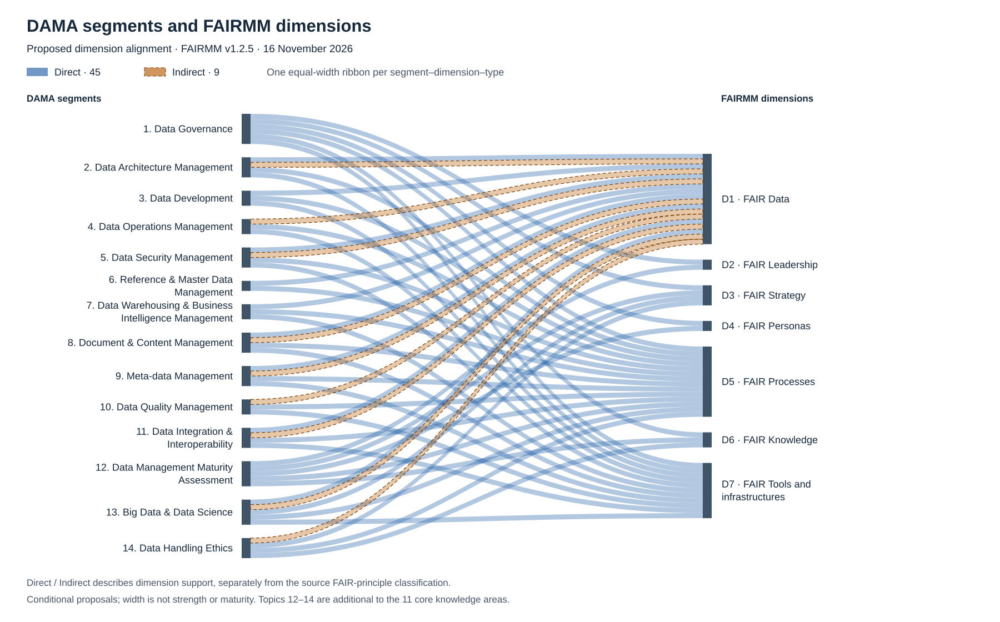

45 Direct and 9 Indirect proposed relationships. Each equal-width ribbon represents one segment–dimension–type relationship, not strength or maturity.

Hover over nodes to highlight connections, select ribbons for rationale and deliverables, and select labels to open documentation. The interactive diagram loads D3 from jsDelivr only after you choose to load it.
Open interactive diagram separately · Offline interactive fallback · Static SVG
Direct/Indirect describes dimension support, separately from source FAIR-principle classifications. All current Indirect links target FAIR Data in the current crosswalk. Maturity Assessment is supporting segment 12; the aggregate overview and two extensions without a segment are excluded.